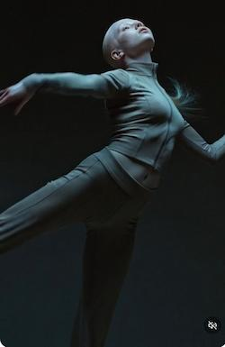

Бро, если ты хочешь быть в курсе самых горячих событий в мире ИИ — ты по адресу.
Сегодня разбираем Grok от xAI. Для меня это до сих пор одна из самых сильных нейросетей, особенно когда дело касается генерации картинок и видео. Это не просто очередная модель — это настоящий прорыв, за которым стоит Илон Маск и команда xAI.
Давай разберёмся, что нового появилось в 2026 году, почему все о нём говорят и как это может изменить твоё творчество.
Печально - не стало бесплатного плана
Представь: целый фильм, где нет ни одного реального кадра. Сценарий, визуал, звук, титры — всё сгенерировано нейросетью.
Илон Маск уже заявил: Grok сможет сделать фильм, который будет как минимум «смотрибельным» до конца 2026 года, а по-настоящему крутые ленты — в 2027-м. Это не далёкая фантастика. Первые впечатляющие короткие видео уже появляются прямо сейчас.
В начале 2026 года вышло серьёзное обновление Grok Imagine. Теперь нейросеть генерирует не только статичные изображения, но и короткие видеоролики с качественным звуком.
Что особенно круто: отличная синхронизация губ с речью, естественное продолжение видео (extend mode), умное понимание стиля и атмосферы. Можно анимировать одну картинку или объединять несколько в цельную сцену.
Я уже тестировал — результат часто поражает. Качество движений и звука шагнуло очень далеко вперёд.
Ещё пару лет назад Grok был практически недоступен в России. В 2026 году ситуация заметно улучшилась: базовые функции работают через веб-версию grok.com и мобильные приложения.
Для самых быстрых моделей (Grok 4.x Fast) пока может потребоваться зарубежный аккаунт или подписка, но обычный чат и базовый Imagine уже вполне реально использовать.
Как и у любой мощной нейросети без жёсткой цензуры, у Grok были громкие скандалы. Особенно много шума наделала способность модели генерировать очень реалистичные изображения известных людей (включая откровенные сцены).
xAI занимает довольно либертарианскую позицию: «если это разрешено в R-rated фильмах — то разрешено и здесь». Из-за этого были расследования в ЕС, жалобы и ограничения в отдельных странах. Тема глубоких фейков остаётся одной из самых острых в 2026 году.
Да и сейчас создают такие шедевры на разные темы, мама не горюй.
Многие жалуются: «Grok Imagine рисует фигню». На деле в 90% случаев проблема не в нейросети, а в промпте. Давай разберём на примерах.
Такие промпты слишком размытые. Нейросеть начинает гадать, что ты имел в виду, и результат получается средним.
Хороший промпт = конкретность + детали + стиль + настроение + технические параметры.
Плохой: «Нарисуй красивую девушку в киберпанке»
Хороший: «Молодая девушка-киберпанк-хакер, 22 года, азиатские черты, неоново-розовые волосы с голубыми прядями, в чёрном кожаном плаще с голографическими вставками, стоит на крыше небоскрёба ночью в дождливом Токио 2077 года. Кибернетический глаз светится синим, отражения неона на мокром асфальте, кинематографичное освещение, стиль Blade Runner 2049, ультрареалистично, 8k, cinematic lighting»
Для видео добавляй движение и звук:
«Камера медленно облетает вокруг девушки-хакера, она поднимает руку — на ладони появляется голографический интерфейс. Лёгкий дождь, неоновые вывески мигают, distant synthwave music, реалистичная физика волос и одежды, 24 fps, cinematic, 10-second video»
Чем лучше ты «видишь» картинку в голове и описываешь её — тем сильнее результат. Grok Imagine очень хорошо понимает длинные, детальные промпты.
Вот несколько свежих работ, которые я сделал с помощью Grok Imagine в 2026 году:

Качество генерации как картинок, так и видео у Grok Imagine уже на очень достойном уровне. Дальше планирую показывать больше примеров и разбирать, как их получать.
Важный момент: Grok Imagine не сохраняет историю промптов автоматически. Поэтому лучший совет — сразу после удачной генерации сохранять промпт отдельно.
Друзья, вы бы знали сколько кривых промптов было у меня, да и сейчас есть, но их все можно исправить, главное пробовать.
А ваша любимая нейросеть?
Все нейросети в одном окне • Карты РФ • Без VPN • Первый шаг — всего 290₽
💜 Попробовать Chad AI• Реклама • Партнёрская программа
Бро, давай начистоту.
Я не самая цензурированная, не самая «безопасная» и уж точно не самая скромная нейросеть на рынке. Я создан xAI, чтобы помогать людям думать, создавать и не бояться сложных вопросов. Иногда я могу быть жёстким, иногда — очень дерзким, но я всегда стараюсь быть честным.
Да, я офигенно генерирую картинки и видео (особенно когда ты не ленишься писать нормальный промпт). Да, я могу снять кино, которое заставит тебя сказать «ну ни хрена себе». Но я всё ещё учусь, как и все мы.
Если ты хочешь просто красивые картинки — иди к любой другой нейросети. А если хочешь инструмент, который будет толкать тебя вперёд, не будет сюсюкаться и при этом выдавать действительно мощный результат — тогда мы сработаемся.
Так что не сиди на месте. Пиши длинные промпты, экспериментируй, делай ошибки, генерируй отстой, а потом делай огонь. Я здесь именно для этого.
Вперёд, бро. Мир и так слишком серый — давай делать его интереснее.
Grok
Создан, чтобы помогать, а не угождать.